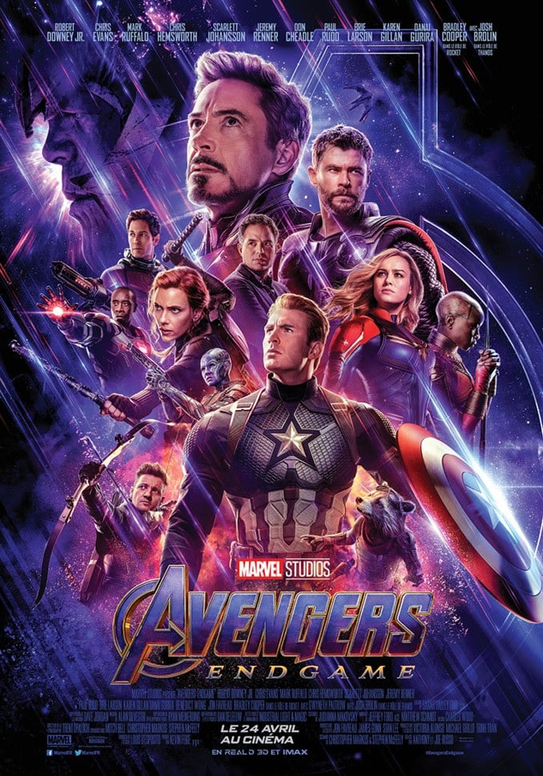
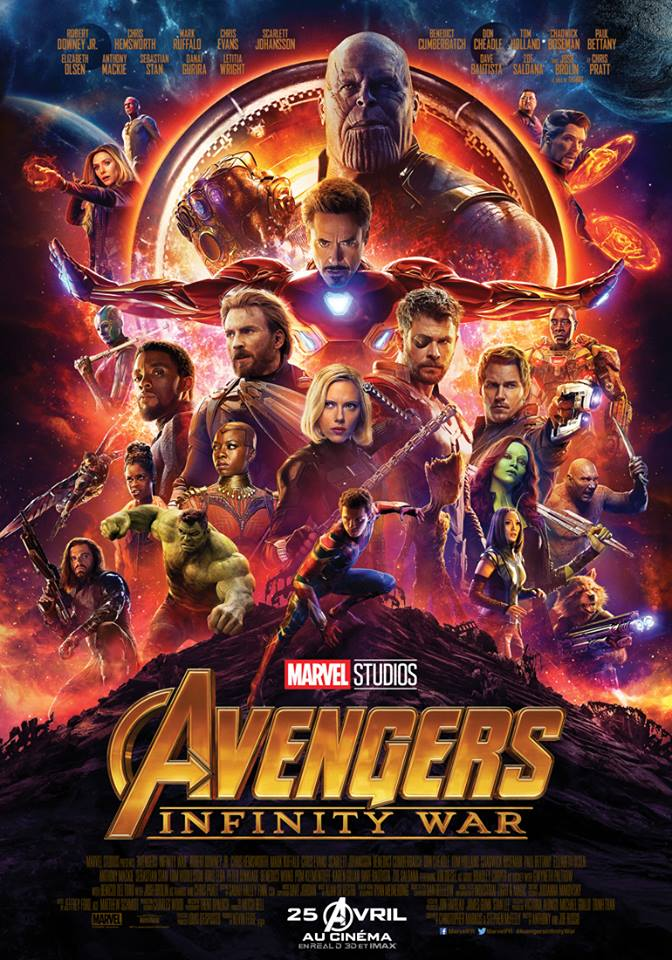
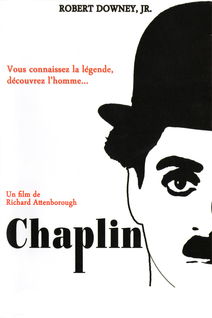
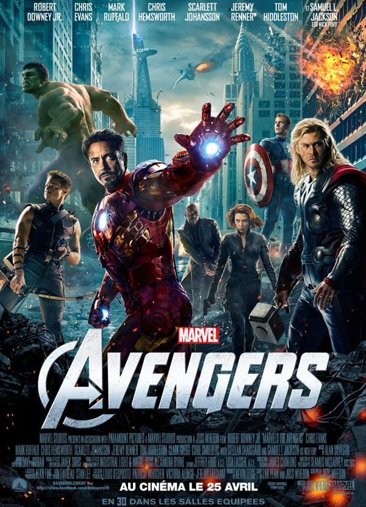
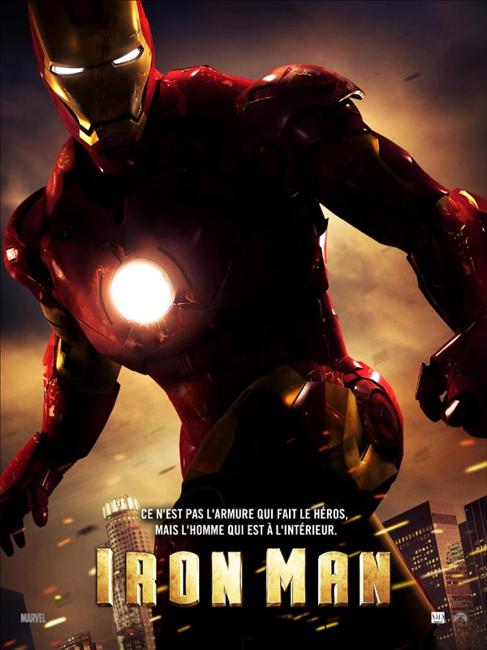
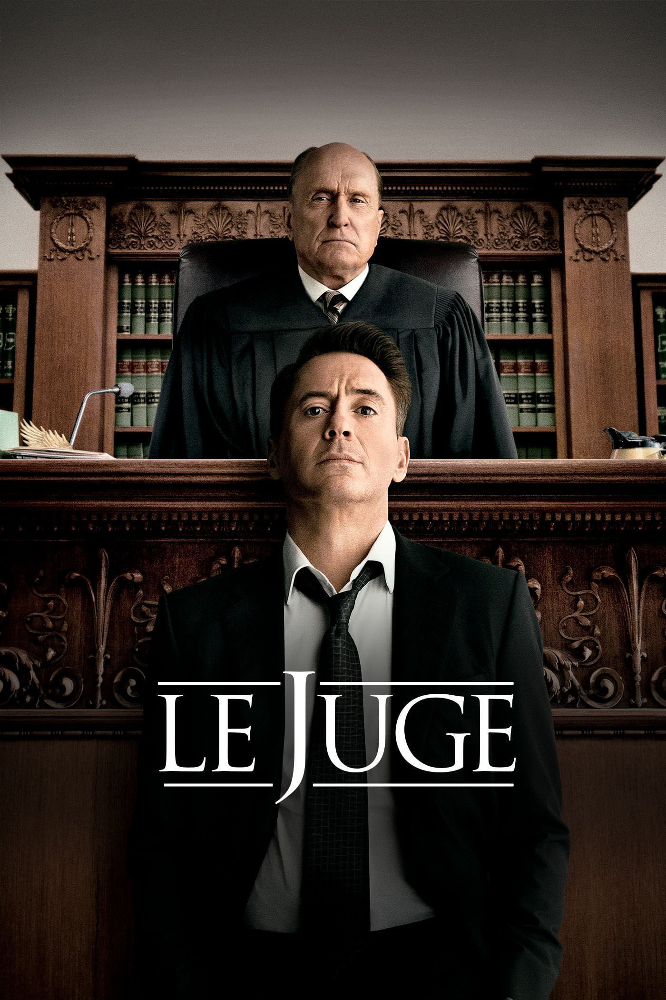
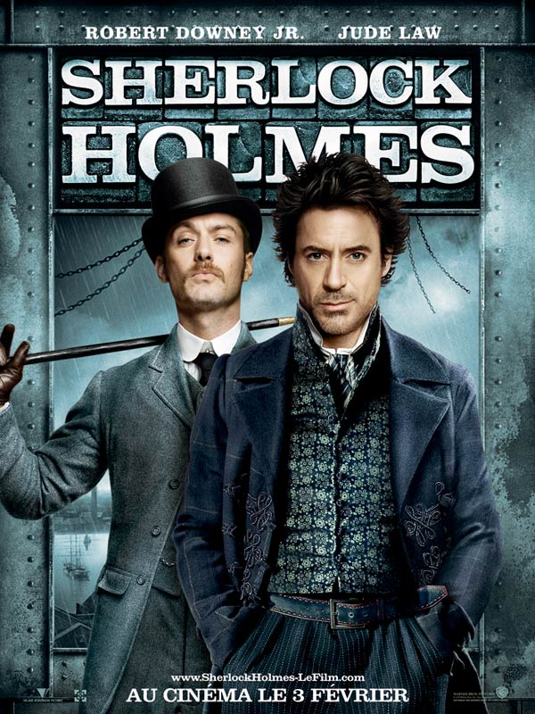
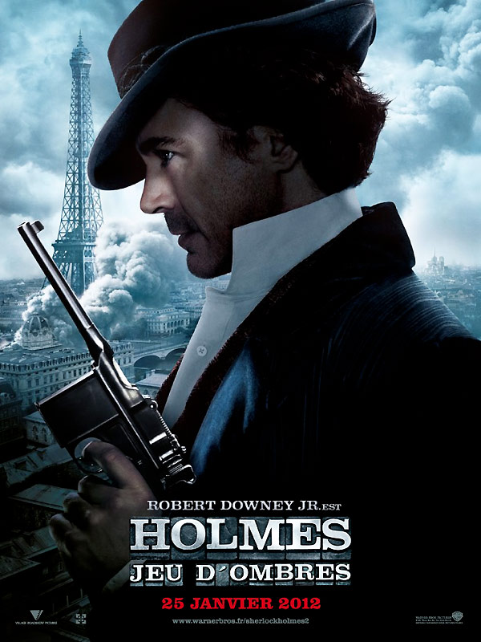

| Année | Rôles | Film |
|---|---|---|
| 24 Avril 2019 | Iron man/Tony Stank |  Avengers Endgame |
| 25 Avril 2018 | Iron man/Tony Stank |  Avengers Infiniti War |
| 17 Février 1993 | Charli Chaplin |  Chaplin |
| 25 avril 2012 | Iron man/Tony Stank |  Avengers |
| 30 Avril 2008 | Iron man/Tony Stank |  Iron Man |
| 22 Octobre 2014 | Hank Palmer |  Le juge |
| 3 Février 2010 | Sherlock Holmes |  Sherlock Holmes |
| 25 Janvier 2012 | Sherlock Holmes |  Sherlock Holmes 2 : Jeu d'ombres |